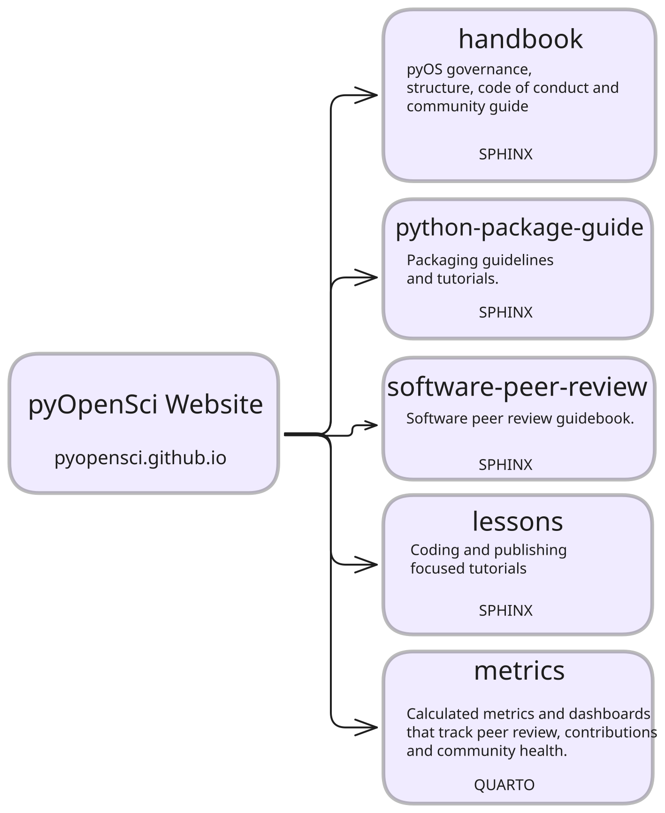

pyOpenSci Infrastructure#
pyOpenSci uses GitHub to manage almost all of its infrastructure, from community processes to website rendering. This page provides a high-level overview of our infrastructure, focusing on how our core repositories work together and contribute to the website and community operations.
For detailed information about specific infrastructure components, see the Learn more section below.
What is pyOpenSci infrastructure?#
pyOpenSci infrastructure encompasses:
GitHub repositories: All code, content, and documentation repositories
Website and documentation: Main website and sub-sites (handbook, guides, lessons)
Data processing: Automated collection and processing of contributor, peer review, and editorial board data
Continuous Integration (CI): GitHub Actions workflows for testing, building, and deploying
Access and permissions: Repository access management and team structures
Issue and pull request workflows: Processes for managing contributions and reviews
Infrastructure overview diagrams#
The diagrams below illustrate two key aspects of our infrastructure:
Data flow and processing#
The first diagram shows how contributor, peer review, and editorial data move from GitHub to the website and metrics:
flowchart LR
Contrib[All Contributors files] --> Meta[pyosMeta]
Issues[Peer review issues in software-submission] --> Meta
Teams[GitHub editorial teams] --> Meta
Meta --> PR[Pull request with updated YAML files]
PR -->|merged| Website[Website pages]
Website -.->|editorial dashboard reads board data| Metrics[Metrics dashboards]
Issues -.->|review data| Metrics
Scheduled workflows run pyosMeta to collect data from GitHub and write it to YAML files. Each run opens a pull request, and the website updates once you merge it. The metrics dashboards run on their own schedule and read the data that’s already on the website’s main branch.
Website structure#
The second diagram shows how the main pyOpenSci website connects to its sub-sites:

pyOpenSci website structure diagram showing the main website and its sub-sites (Handbook, Python Package Guide, Software Peer Review Guide, Lessons, and Metrics).#
All sub-sites are built separately but served under the pyopensci.org domain, with the main website (pyopensci.github.io) serving as the central hub.
Where each page’s data comes from#
The pyosMeta package is a Python package that parses review, contributor, and editorial data and turns it into machine-readable YAML files. Here’s where each public page gets its data:
Our Community and Packages pages. The Update Contribs & reviewers workflow reads the All Contributors files (
.all-contributorsrc) in our repositories and the review issues insoftware-submission.Editorial board page. The Update editorial board workflow reads the GitHub teams under
peer-review-team, plus a small manual roster for people who can’t join the organization. If you add or remove editors, see editorial teams.Metrics dashboards. The metrics repository has its own workflow. It reads review data from GitHub and the editorial board files from the website’s
mainbranch.Pull request checks. Every repository runs checks when you open a pull request. See continuous integration.
Both website workflows live in pyopensci.github.io. For schedules, the files each one writes, and what to do when one fails, see data workflows.
How our websites are built#
The main website (
pyopensci.github.io) is built with Hugo.The Python Package Guide, Peer Review Guide, Handbook, and Lessons are Sphinx books. Most use the
pyos-sphinx-theme, our branded theme built on top ofpydata_sphinx_theme.The metrics dashboards are built with Quarto.
Each site is built separately and published under the pyopensci.org domain using GitHub Pages.
Learn more#
For details on each part of our infrastructure, see:
All repositories: Complete list and description of all pyOpenSci GitHub repositories
Data workflows: Schedules, files, and troubleshooting for contributor, package, and editorial data
Continuous integration: CI/CD workflows and GitHub Actions
Permissions: Repository access management and team structures
Editorial teams: Which GitHub team to use when you add or remove an editor
Pull requests: How to work with pull requests in pyOpenSci repos
Issues: Issue management and labeling workflows